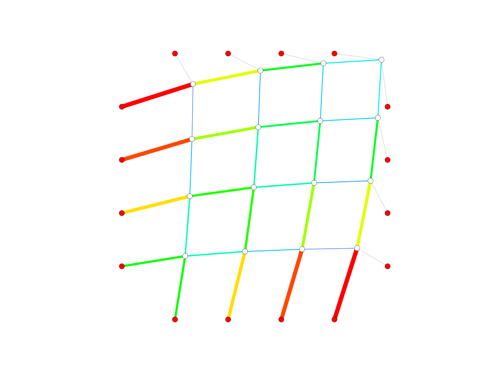

drx
-
compas.numerical.drx(network, factor=1.0, tol=0.1, steps=10000, refresh=0, update=False, callback=None, **kwargs)[source] Run dynamic relaxation analysis.
Parameters: - network (obj) – Network to analyse.
- factor (float) – Convergence factor.
- tol (float) – Tolerance value.
- steps (int) – Maximum number of steps.
- refresh (int) – Update progress every n steps.
- update (bool) – Update the co-ordinates of the Network.
- callback (obj) – Callback function.
Returns: array – Vertex co-ordinates. array: Edge forces. array: Edge lengths.
Example:
import compas from compas.datastructures import Network from compas.plotters import NetworkPlotter from compas.numerical import drx from compas.utilities import i_to_rgb network = Network.from_obj(compas.get('lines.obj')) network.update_default_vertex_attributes({'is_fixed': False, 'P': [1, 1, 0]}) network.update_default_edge_attributes({'E': 10, 'A': 1, 'ct': 't'}) network.set_vertices_attributes(network.leaves(), {'B': [0, 0, 0], 'is_fixed': True}) drx(network=network, tol=0.001, refresh=5, update=True) plotter = NetworkPlotter(network) lines = [] for u, v in network.edges(): lines.append({ 'start': network.vertex_coordinates(u, 'xy'), 'end' : network.vertex_coordinates(v, 'xy'), 'color': '#cccccc', 'width': 1.0}) plotter.draw_lines(lines) plotter.draw_vertices(facecolor={key: '#ff0000' for key in network.vertices_where({'is_fixed': True})}) fmax = max(network.get_edges_attribute('f')) plotter.draw_edges( color={(u, v): i_to_rgb(attr['f'] / fmax) for u, v, attr in network.edges(True)}, width={(u, v): 10 * attr['f'] / fmax for u, v, attr in network.edges(True)}) plotter.show()